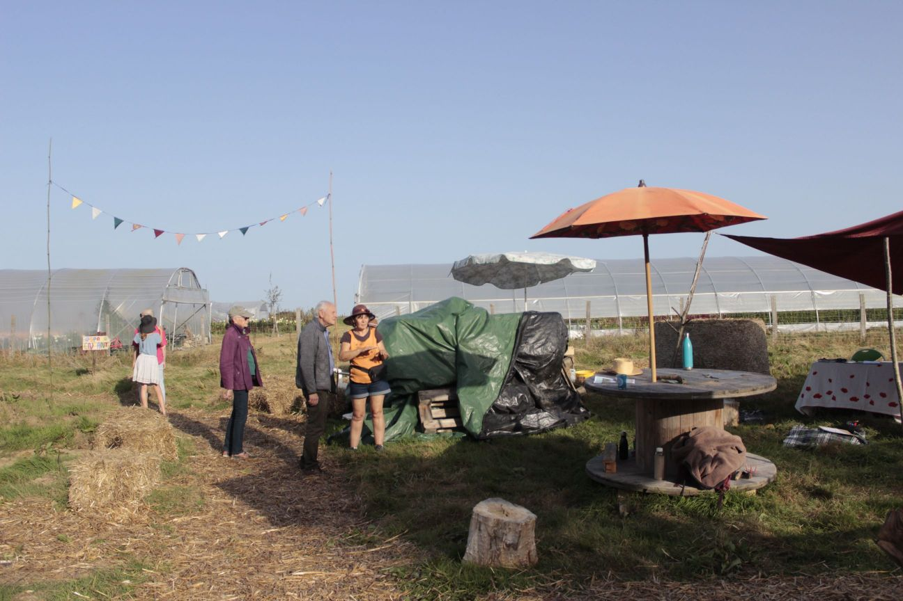

Rétrospective 2023

2023, c’était notre deuxième année à la Pépille, pépinière associative et forêt nourricière, et la 4e ou 5e année d’existence des Vigiliantes. C’est l’heure de l’exercice revigorant de la rétrospective annuelle, pour se rendre compte du chemin parcouru !
1. A la Pépille
Création de la pépinière, notre espace de production
L’une des grandes nouveautés est la création d’une pépinière en bonne et due forme : un espace clôturé de production d’arbres et arbustes, destinés à vivre leur vie ailleurs ensuite.
Merci à toutes les personnes qui se sont fait les bras avec nous à coups d’enfonce piquet !
Grâce à cet espace, on a pu greffé une trentaine d’arbre et bouturer une trentaine de petits fruitiers. 2Bilan des courses : + de la moitié des greffes ont pris (comme on est des débutantes complètes, on trouve ça pas si mal), une vingtaine de boutures de petits fruits et 4 ou 5 figuiers.

Toutes ces plantes vont chercher un nouveau site d’implantation en 2024 ! Avis aux jardins collectifs, aux zones artisanales ou aux collectivités…
On commence sérieusement les aménagements
En 2022, la Pépille a été lauréate du 1er budget participatif de Dinan Agglomération. C’est grâce à cette aide qu’on a pu donner un coup de collier sur l’aménagement du lieu en 2023.

En plus d’un espace pépinière clôturée, on a ainsi vu émerger : - des toilettes sèches, - une mare (qui sera finalisée en ce début d’année),
On initie de nouveaux formats
A côté des traditionnels chantiers ouverts et des ateliers (plus d’infos un tout petit peu plus bas), on a aussi lancé de nouveaux formats de rencontre.
Tout l’été, des apéros-chantier (on avance ensemble sur une tâche précise, puis on boit un coup) ont permis à celles et ceux qui ne sont pas disponibles en journée de venir nous rendre visite en soirée.

Et en fin d’année, on est ravie d’avoir accueilli une première classe sur la Pépille, le temps d’un après-midi ! Fin novembre, une classe de CP de l’école de Lanvallay a pu découvrir le lieu et mettre en terre des boutures de groseille, cassis et thym.
Rendez-vous au printemps pour voir ce qui aura pris !
Les temps forts
- Février : Initiation greffe anglaise
- Mai : Initiation greffe en couronne
- Juin : Assemblée générale

- Juin : Initiation Fauchage
- Octobre : portes ouvertes

- Novembre : Initiation bouture
2. Les à côtés
Il n’y a pas que la Pépille dans la vie des Vigiliantes (même si c’est vrai que ça prend le plus gros de notre temps en ce moment…).
Alors, qu’a-t-on fait quand on n’était pas sur la parcelle ?
- Février : organisation d’une fresque du climat au -feu- bar Kenvad
- Mars : Visite de la pépinière les Jardins de Beauchêne
- Août : Commande groupée de faux
- Novembre : Intervention durant la Semaine du Développement Durable du lycée Fontaine des Eaux, autour de l’atelier “Inventons nos vie bas carbone”
- participation à bon nombre de temps de réflexions, notamment auprès de Dinan Agglomération : ateliers SCOT, atelier Rupture Alimentaire, retour du programme de recherche Atlass 2…
Quelques chiffres
2023, c’est : - une cinquantaine d’événements organisés (chantiers ouverts, initiation, visites, portes ouvertes…) - environ 450 “entrées” en cumulé - une soixantaine de greffes - une centaine de plantations…
Durant cette année, on n’a pas avancé seuls, mais aidé par une multitude de personnes. Des asso, des collectifs, des particuliers… Un immense merci à toutes celles et ceux qui sont passés à la Pépille !
Rendez-vous dès maintenant pour faire vivre ensemble l’année 2024 !